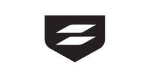

Trade Mark Journal No.2025/033 15 August 2025
UK00004244600 5 August 2025 (9,25,35,41,42)
Mark 1

Mark 2
Mark 3
Mark 4
Mark 5
Mark 6
- Class 9
- Computer software; artificial intelligence software; machine learning software; threat detection software; computer anti-adware software; computer anti-malware software; computer anti-spam software; computer anti-spyware software; computer software for encryption; downloadable computer data-security programs; computer software for use in Internet content filtering, secure Internet content management, Internet content-checking, and data content checking; network monitoring hardware and software; computer software for use in threat-reduction scanning of data, e-mails, electronic files, instant messages, web sites, software, programs, computer systems, and endpoints; computer compliance software; computer software, computer programs, and downloadable mobile applications for use in managing, monitoring, protecting, authenticating, and securing data, endpoints, computer systems, computer networks, servers, the Internet and mobile devices; computer software, computer programs, and downloadable mobile applications for enforcing data policies; computer anti-virus software; downloadable computer software for managing, configuring, installing, and uninstalling software applications and data; downloadable computer software for managing, monitoring, protecting, authenticating, and securing data, endpoints, network security devices, computer systems, computer networks, servers, the Internet, and mobile devices; downloadable computer software for managing on-line scanning, detecting, quarantining and eliminating of viruses, worms, Trojans, spyware, adware, malware and unauthorised data and programs on computers and electronic devices; downloadable software for IT infrastructure and cybersecurity automation; AI software; augmented and virtual reality software; computer software relating to the handling of financial transactions; computer software enabling the generation of cryptographic keys ; downloadable cryptographic keys ; security tokens [encryption devices]; computer software for blockchain technology; computer software for cross-blockchain transmission and blockchain solutions; computer software for managing cryptocurrency transactions using blockchain technology; computer software for metaverse services; digital file management software; cloud network monitoring software; cloud computing software; cloud server software; secure access service edge (SASE) software; downloadable digital files authenticated by non-fungible tokens; downloadable multimedia files; downloadable digital video recordings; downloadable image files; downloadable electronic publications; downloadable electronic publications, articles, documents and data in the field of data security and security of endpoints, computer systems, computer networks, servers, the Internet and mobile devices; downloadable electronic data files featuring documentation, operational data, alerts, and news updates in the field of data security and security of endpoints, network security devices, computer systems, computer networks, servers, the Internet, and mobile devices; downloadable software, namely, publications, recorded content, downloadable music files, downloadable movies and films, downloadable images, artistic objects, databases; metaverse content operating software; metaverse software; software enabling the storage of non-fungible tokens registered on a blockchain network; utility, security and cryptography software; financial management software; currency authentication apparatus and equipment; computer hardware; intelligent edge devices; edge computing and storage devices; SASE (Secure Access Service Edge); industrial SASE; SASE hardware and software for network security functions with wide area networking (WAN) capabilities; WAN [wide area network] hardware; WAN [wide area network] operating software; WAN [wide area network] routers; mouse pads, webcam covers, USB hardware, mobile phone battery chargers, mobile phone cases; wireless access points; parts, fittings and accessories for all of the aforesaid goods.
- Class 25
- Clothing; footwear; headgear; parts, fittings and accessories for all of the aforesaid goods.
- Class 35
- Business services; administration of a program for enabling participants to receive expedited services in the field of data security, computer security, and network security; business administration services; customer service management for others; promoting the use of the security assurance best practices of others in the field of cloud computing; value-added reseller services; retail services connected with the sale of computer hardware and computer software via a distributorship; database management; promoting the use of the security assurance best practices of others in the field of cloud computing; wholesale services connected with the sale of computer hardware and computer software via a distributorship; information, consultancy and advisory services relating to the aforesaid.
- Class 41
- Education; providing of training; educational services; conducting educational technical demonstrations, presentations, workshops, and training seminars; providing goods and services in online virtual worlds; entertainment services, namely provision of non-downloadable virtual publications, recorded content, and downloadable videos; information, consultancy and advisory services relating to all of the aforesaid services. .
- Class 42
- Software authoring; computer services for the protection of software; data security services; computer software technical support services; troubleshooting of computer software problems; technical advice related to computer and network security; installation, maintenance and repair of computer software; computer security consultancy; computer and information technology consultancy services; computer consulting services; computer software, hardware, firmware, network, and computer security consulting services; providing on-line, non-downloadable software for use in managing, monitoring, protecting, authenticating, and securing data, endpoints, computer systems, computer networks, servers, the Internet, and mobile devices; providing non-downloadable software on data networks; providing on-line, non-downloadable software for enforcing data policies; design, configuration, integration and development of computer hardware, computer networks, computer systems and virtual private network (VPN) services; providing on-line, non-downloadable software for encryption; provision of security services for computer networks, using routers, routing switches, remote entry point control apparatus, access control devices, multiplexers and networking devices provided as a service provision of security services for computer networks, using SASE hardware and software for network security functions with wide area networking (WAN) capabilities; providing on-line, non-downloadable computer compliance software; providing on-line, non-downloadable software for use in Internet content filtering, secure Internet content management, Internet content-checking, and data content checking; Software as a service [SaaS]; software as a service (SAAS) services featuring software for use in managing, monitoring, protecting, authenticating, and securing data, endpoints, computer systems, computer networks, servers, the Internet, and mobile devices; software as a service (SAAS) services featuring software for providing security and compliance reports about users, security policies, computer systems, and computer networks; software as a service (SAAS) services featuring software for network asset inventory management; Software as a service )[platforms for artificial intelligence]; anti-spamming services; artificial intelligence consultancy; research in the field of artificial intelligence technology, deep learning and machine learning technology; research relating to the development of computer programs, software and hardware; computer virus protection services and fraud detection (using AI technology); Connectivity as a Service (CaaS); Hardware as a Service (HaaS); platform as a service [PaaS]; platform as a service (PAAS) services featuring software for use in managing, monitoring, protecting, authenticating, and securing data, endpoints, computer systems, computer networks, servers, the Internet, and mobile devices; software rental; cloud computing featuring software for use in managing, monitoring, protecting, authenticating, and securing data, endpoints, computer systems, computer networks, servers, the Internet, and mobile devices; computer development services; computer programming services; computer virus protection services; computer security services by way of notification of unauthorised electronic messages and related computer attacks; computer security services; computer security services in the nature of enforcing, restricting and controlling access privileges of users of computing resources for cloud, mobile or network resources based on assigned credentials; providing information on data security, and computer security; troubleshooting of computer software problems; technical advice related to computer and computer network security; computer software technical support services; monitoring of computer systems for security purposes; computer services, namely, hosting an interactive web site that allows businesses to design, build, manage, modify, test, run, and publish IT infrastructure and cybersecurity automation; software as a service (SAAS) services featuring software for businesses to design, build, manage, modify, test run, and publish system installation and configuration automation; technology consulting services in the field of cloud computing; technology consulting services in the field of cybersecurity; technology consulting services in the field of IT infrastructure and cybersecurity automation; providing a website featuring information in the field of security; providing a website used to place on-line commercial orders in the field of computer hardware and computer software; tracking, monitoring, and reporting for purposes of protecting against data theft, identity theft and fraud; leasing and hiring of computer hardware and/or computer software; data authentication via blockchain; data storage via blockchain; blockchain as a Service [BaaS]; certification of data via blockchain; user authentication services using blockchain technology; digital asset management; non-downloadable virtual software services for the metaverse; services of providing non-downloadable virtual goods; monitoring of computer systems for cybersecurity; 24/7 monitoring of network systems, servers and web and database applications and notification of related events and alerts; 24/7 monitoring of servers and web and database applications and notification of related events and alerts; remote and on-site services for monitoring, administration and management of public and private cloud computing and application computing systems; remote and on-site infrastructure management services for monitoring, administration and management of public and private cloud computing IT and application systems; troubleshooting of computer software problems; monitoring technological functions of computer network systems; design of communication systems between users; computer security consultancy; computer consulting services; design and development of computer software for an online virtual community enabling users to participate in a live social network on the Internet; information, consultancy and advisory services relating to all of the aforesaid services.
Sophos Limited
Representative: Slingsby Partners LLP